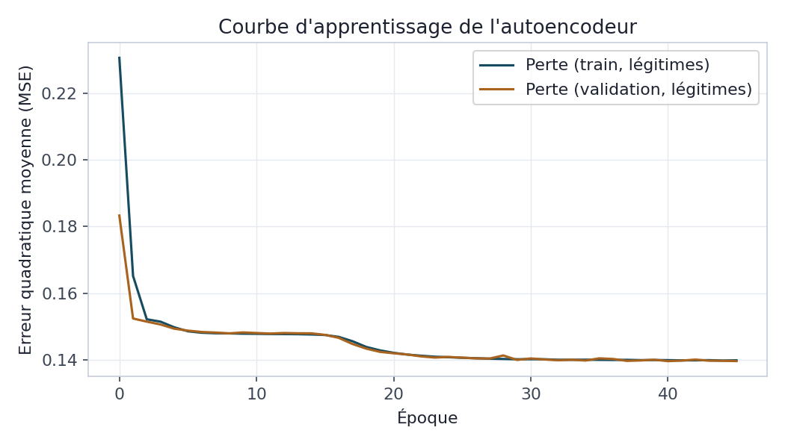
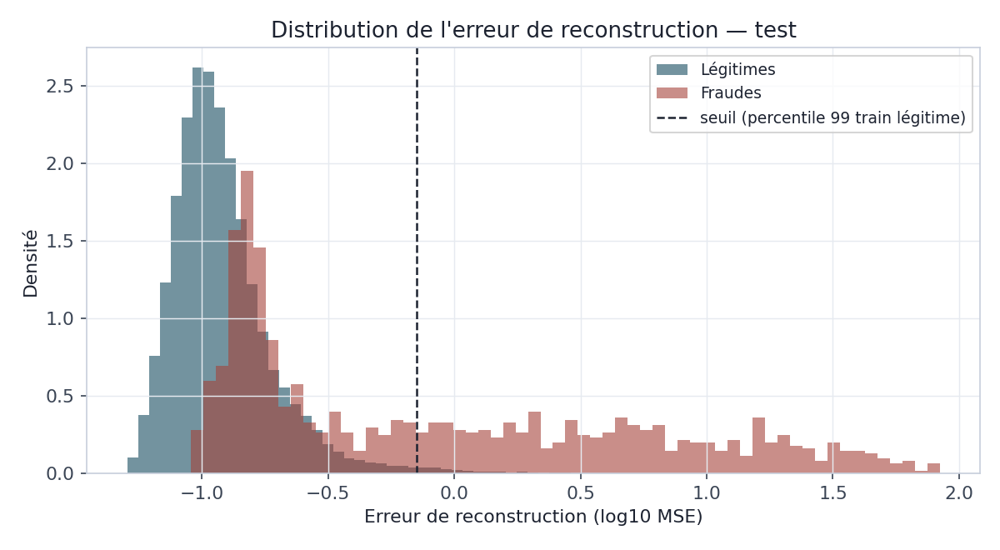

Deux approches qui ne voient pas la fraude comme le BC03 : un autoencodeur qui n'apprend jamais le label, et un réseau récurrent qui reçoit l'historique du client — pour savoir ce qu'elles apportent réellement, pas ce qu'on espère qu'elles apportent.
Les modèles du BC03 partagent une même hypothèse de travail : les fraudes qu'ils détectent ressemblent, au moins un peu, à celles qu'on leur a montrées pendant l'entraînement. C'est une hypothèse raisonnable, mais fragile — un fraudeur qui invente un mode opératoire réellement nouveau échappe par construction à un modèle qui n'a appris qu'à reconnaître des motifs déjà labellisés. Le BC04 explore deux façons de s'affranchir de cette dépendance au label ou à l'indépendance des transactions : un autoencodeur, qui apprend à quoi ressemble une transaction normale sans jamais voir le mot « fraude », et un réseau de neurones récurrent, qui reçoit l'historique récent d'un client plutôt qu'une transaction isolée. Les deux approches sont évaluées avec la même rigueur que le BC03 — split temporel, métriques adaptées au déséquilibre — pour mesurer ce qu'elles apportent réellement, y compris quand la réponse est « moins que prévu ».
L'autoencodeur est entraîné selon un protocole strictement différent de tout ce qui précède dans
ce projet : à aucun moment, ni pendant l'apprentissage ni pendant le calibrage du seuil de
détection, le modèle n'a accès à la colonne is_fraud. Il apprend uniquement à
compresser puis reconstruire des transactions légitimes du train ; le seuil d'alerte est
lui-même calibré sur la distribution de l'erreur de reconstruction des seules transactions
légitimes (percentile 99), jamais sur le comportement des fraudes du test. Les labels ne servent
qu'à une chose : évaluer, a posteriori, si les transactions mal reconstruites sont effectivement
des fraudes. C'est cette discipline qui donne sa valeur à l'exercice — un autoencodeur calibré en
regardant les fraudes ne démontrerait rien sur sa capacité à généraliser à des fraudes inconnues.
Le réseau de séquences part d'un constat inverse : les modèles du BC03 jugent chaque transaction indépendamment des autres, alors qu'un fraudeur agit dans le temps. Le modèle reçoit donc, pour chaque transaction à classer, une fenêtre glissante des L = 5 dernières transactions du même client — la transaction à classer étant elle-même le dernier pas de la séquence, pas seulement son historique : elle porte l'essentiel du signal identifié aux BC02/BC03 (montant, distance, canal, authentification), et l'exclure aurait privé le modèle de l'information la plus déterminante. Les variables catégorielles (canal, authentification, segment) sont apprises comme des embeddings plutôt qu'encodées en one-hot : plus compactes, elles laissent le réseau apprendre lui-même une représentation numérique adaptée à la tâche, au lieu d'une représentation binaire figée a priori.
scale_pos_weight) sans difficulté, parce que le gradient boosting
applique cette pondération arbre par arbre sur l'ensemble du jeu de données. Appliqué tel quel à
un entraînement par mini-lots (Adam), ce même facteur produit des gradients disproportionnés dès
qu'un lot contient une fraude, et déstabilise l'apprentissage. Le réseau de séquences utilise
donc la racine carrée du ratio (≈ 8), un compromis usuel en deep learning entre rééquilibrage
effectif et stabilité numérique, complété par un écrêtage de gradient
(clipnorm=1.0).
L'architecture est volontairement simple : un encodeur à trois couches denses (12 → 6 → 3 neurones, la couche à 3 neurones formant le goulot d'étranglement) suivi d'un décodeur symétrique (6 → 12 → 18, la dimension d'entrée). Les mêmes variables et le même prétraitement qu'au BC03 (mise à l'échelle, encodage one-hot) alimentent le modèle. Sur 320 000 transactions d'entraînement, 315 221 sont légitimes : c'est sur ce seul sous-ensemble que l'autoencodeur est entraîné, avec 10 % conservés en validation pour l'arrêt anticipé.

Utilisée comme score continu, l'erreur de reconstruction atteint une AUC-ROC de 0,886 et une average precision de 0,414 — nettement en retrait des 0,998 et 0,921 du LightGBM du BC03. Ce n'est pas une surprise : le LightGBM a appris, label à l'appui, la forme exacte des six typologies de fraude simulées ; l'autoencodeur, lui, n'a appris qu'à reconnaître la normalité, et infère le reste. Au seuil calibré (percentile 99 de l'erreur sur les transactions légitimes du train), il détecte 45,3 % des fraudes du test avec une précision de 36,7 %.

Le taux de détection par typologie révèle une ligne de partage nette, et cohérente avec la nature
même de la méthode. Un autoencodeur signale ce qui s'écarte statistiquement de la normalité
globale — une anomalie ponctuelle. Il détecte donc quasi parfaitement
ingenierie_sociale (99,1 %, des montants extrêmes) et usurpation_identite
(93,6 %, une distance au domicile extrême), deux typologies dont la signature est justement une
valeur individuellement rare. À l'inverse, il ne détecte aucune occurrence de
skimming ni de test_carte : leurs montants, pris isolément, ne sont pas
extraordinaires — un très petit ou moyen montant reste une valeur banale dans la distribution
globale des transactions. Ce que le modèle ne voit pas, ce sont les anomalies
contextuelles : une combinaison de valeurs individuellement plausibles, mais anormale
dans son contexte (canal + heure + montant pris ensemble).
380 000 séquences de longueur 5 sont construites à partir des 400 000 transactions batch (les clients disposant de moins de 5 transactions sur l'année ne peuvent former de séquence complète). Le modèle combine trois entrées par pas de temps — montant, distance au domicile et heure (normalisés), un embedding de canal (3 dimensions) et un embedding d'authentification (2 dimensions) — résumées par une couche LSTM à 32 unités. Le segment client et le revenu mensuel, constants sur la séquence, sont injectés séparément après le LSTM plutôt que répétés à chaque pas de temps.
| Paramètre | Valeur |
|---|---|
| Longueur de séquence | 5 transactions (la cible incluse) |
| Séquences train / test | 299 971 / 80 029 (split temporel identique au BC03) |
| Poids de classe (fraude) | 8,1 (racine carrée du ratio brut ≈ 66) |
| Optimiseur | Adam, taux d'apprentissage 5.10⁻⁴, clipnorm=1.0 |
| Arrêt | Anticipé sur l'AUC de validation (38 époques) |
Réévalué sur EXACTEMENT le même sous-ensemble de transactions de test que le réseau de séquences (celles disposant d'un historique suffisant), le LightGBM du BC03 obtient une AUC-ROC de 0,998 et une average precision de 0,921. Le réseau de séquences atteint 0,997 et 0,897 — un écart minime, mais qui joue en défaveur du modèle censé apporter le contexte temporel. Les deux courbes se suivent presque trait pour trait.

| Modèle | AUC-ROC | Avg. Precision | Précision @0,5 | Rappel @0,5 | F1 @0,5 |
|---|---|---|---|---|---|
| LSTM (séquences) | 0,997 | 0,897 | 54,3 % | 96,9 % | 0,696 |
| LightGBM (BC03, même test) | 0,998 | 0,921 | 60,9 % | 96,6 % | 0,747 |
La table de complémentarité, au seuil de 0,5, achève de préciser le tableau : sur 1 221 fraudes du test, 1 161 sont détectées par les deux modèles, 22 seulement par le LSTM, 19 seulement par le LightGBM, et 19 par aucun des deux. Les deux modèles sont donc très largement redondants — chacun rattrape une poignée de cas que l'autre manque, sans qu'aucun ne domine nettement l'autre sur cette poignée.
Ce résultat n'est pas un échec de l'architecture séquentielle : c'est une conséquence directe,
et honnête à documenter, de la façon dont les données ont été simulées au BC01. Les six
typologies de fraude y sont chacune définies par les attributs d'une unique
transaction — un montant, une distance, une heure, un canal — jamais par une relation entre
plusieurs transactions successives d'un même client. Un modèle séquentiel ne peut exploiter un
signal temporel qui n'existe pas dans les données : il ne peut, au mieux, que retrouver le signal
instantané déjà accessible à un modèle tabulaire, ce qui est précisément ce qu'on observe. La
typologie skimming — décrite au BC01 comme une signature potentielle de
vélocité (plusieurs petites transactions rapprochées) — est en réalité générée comme des
transactions indépendantes les unes des autres, sans lien de cumul entre elles : le générateur
actuel ne construit pas la rafale qui rendrait cette typologie identifiable par son contexte
temporel.
skimming produise une véritable rafale corrélée (plusieurs transactions du même
client en quelques minutes, cumul de montant croissant) donnerait au réseau de séquences un
signal réellement temporel à exploiter — et permettrait de mesurer, cette fois, un gain
authentique par rapport à un modèle par transaction indépendante. L'infrastructure de ce bloc
(construction de séquences, embeddings, LSTM) reste valable telle quelle ; c'est la donnée
d'entrée qui devrait évoluer.
Le BC04 livre deux résultats complémentaires, tous deux mesurés plutôt que supposés. L'autoencodeur confirme qu'une approche non supervisée peut détecter une partie substantielle de la fraude — notamment ses formes les plus extrêmes — sans jamais avoir vu le label, ce qui en fait un filet de sécurité pertinent contre des typologies encore inconnues, à condition d'accepter qu'il rate structurellement les anomalies contextuelles plus discrètes. Le réseau de séquences, lui, démontre que l'architecture fonctionne (convergence stable, performance proche du meilleur modèle du BC03) mais qu'elle n'apporte pas ici de gain mesurable, pour une raison identifiée avec précision : le jeu de données ne contient pas de dépendance temporelle réelle à exploiter. Pour le BC05, le LightGBM du BC03 reste le modèle de référence pour le scoring en temps réel ; l'autoencodeur constitue un signal secondaire naturel — un score d'anomalie affiché à côté du score de fraude supervisé, plutôt qu'un remplacement — pour signaler à un analyste les transactions dont la forme sort de tout ce que les modèles ont appris à reconnaître.